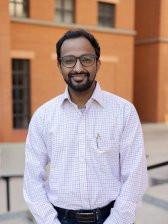
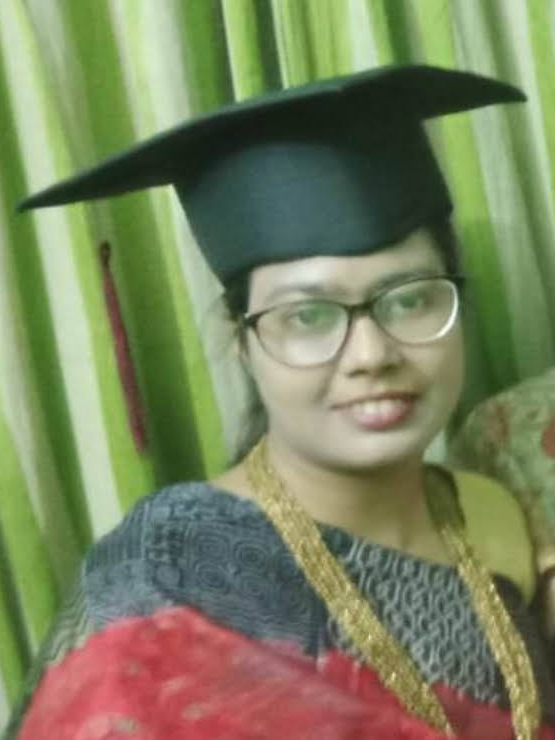
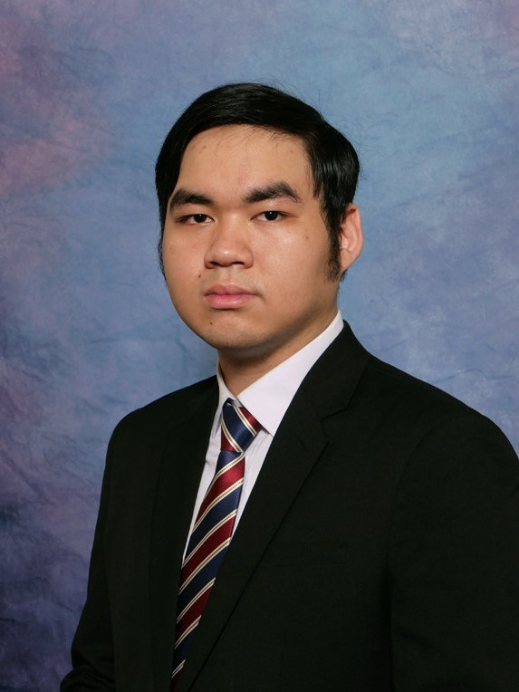
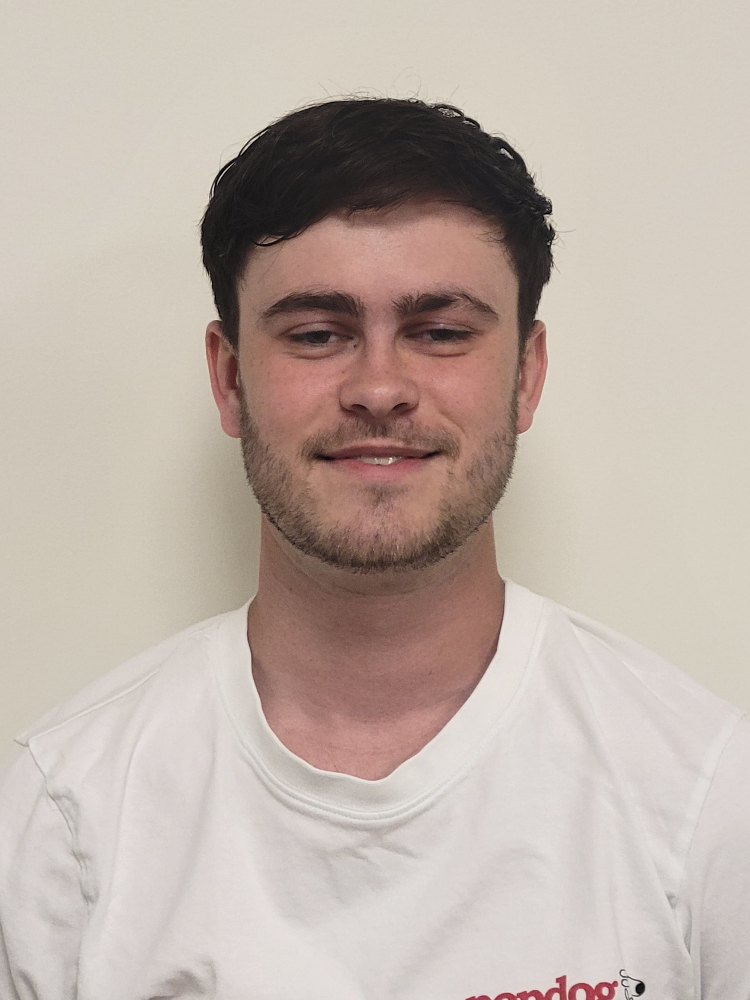
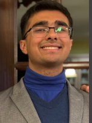
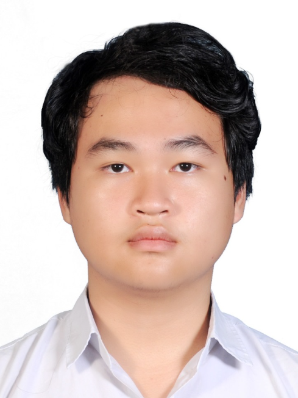
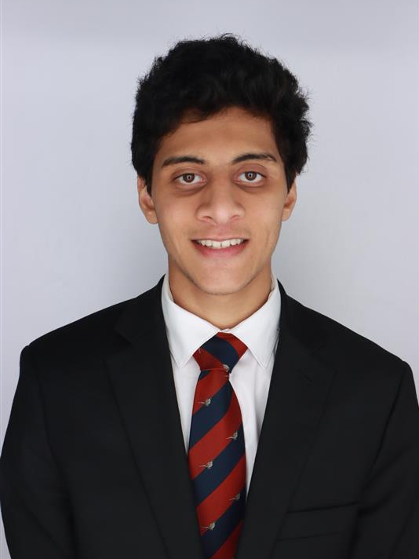
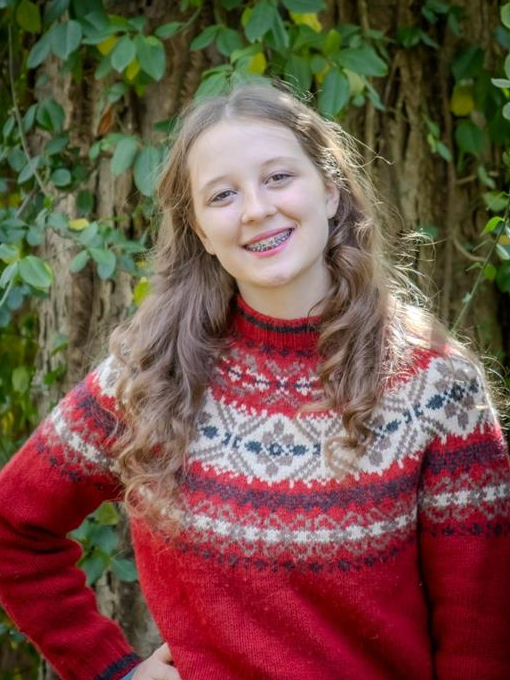
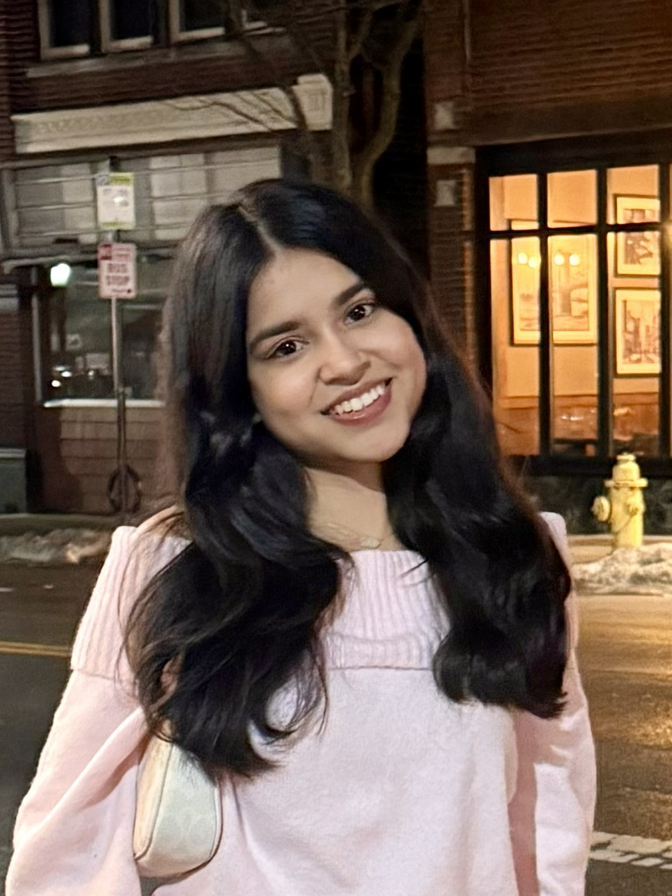

Members
Principal Investigator

Ankit Mittal is an Assistant Professor in the College of Engineering and Applied Science at the University of Cincinnati, Ohio. He earned his Ph.D. in Electrical and Computer Engineering from Northeastern University, Boston, in 2024. He completed his B.Tech. in Electronics and Communication Engineering from Dayalbagh Educational Institute, India, in 2014, graduating as the valedictorian and receiving the Director’s Gold Medal. He previously worked as a Postdoctoral Research Associate at Northeastern University and as a Senior Design Engineer at NXP Semiconductors, India, where he specialized in SoC design and contributed to five memory test chip tapeouts. For his leadership in test chip design activities, he received NXP’s prestigious Bingo Award. His research focuses on ultra-low-power, secure, resilient, and spectrum-aware RF radios. He also received the 2024 College of Engineering Outstanding Graduate Research Award at Northeastern University.
PhD Students

Teene Bustana is a Ph.D. student in Electrical and Computer Engineering at the University of Cincinnati and a member of the COSMIC Lab. Her research focuses on hardware security and trust in low-power RF/AMS IC for IoT applications. Prior to joining UC, she worked as an RF/AMS IC Design Engineer at Neural Semiconductor Limited (NSL), Dhaka, as a contractor for GlobalFoundries, where she contributed to the design and development of mm-wave and RF front-end integrated circuits and successfully completed more than 10 tape-outs. She received her B.Sc. in Electrical and Electronic Engineering from the University of Dhaka.
Master Students
Undergraduate Students

Tran Chi Thanh (URCF Co-op 2026) is a Computer Science Student at the University of Cincinnati and a member of the COSMIC Lab. He currently working as a Co-op Research Student for Dr. Mittal under UC' URCF Program and Senior Design, focusing on low-power sensor system for IoT applications.

Jackson Pawlowicz (Co-op Summer 2026) is a 5th year Undergraduate Computer Engineering student at the University of Cincinnati and member of the COSMIC lab. His main focuses are on creating educational resources for analog design with CMOS technology and creating automated workflows for tape-outs. He has analog design experience from personal projects such as designing an analog synth (keyboard) and an analog drum machine (on-going).

Anay Sehgal (Co-op Summer 2026) is a third year electrical Engineering student with minors in Math and Nanotechnology, and member of the COSMIC lab. He've done two co-op rotations, one in Ross lab focusing on sensors and GE appliances focusing on board design and diagnosis

Le Anh Hung (Prodigy Program 2026) is a first-year Electrical Engineering student with a strong foundation in physics and mathematics. He had designed and built wireless electronic drumsticks using embedded systems. He is experienced in group collaboration and effective at explaining technical concepts. Used to do on stage music performances.

Nikhil Patil (Co-op Summer 2026) is an Electrical Engineering student at the University of Cincinnati pursuing a Bachelor of Science in Electrical Engineering and a Master of Engineering in Sustainable Energy. He is currently working as a Research Intern for Dr. Mittal, focusing on the characterization and automation of photovoltaic (PV) and organic photovoltaic (OPV) systems for low-power agricultural sensor applications.
Toby Townsley (Co-op Summer 2026) is an Electrical Engineering student at the University of Cincinnati currently working as a student Co-Op at the COSMIC lab under Dr.Mittal. He is currently working on designing and optimizing analog computing systems with a focus on differential equations.
Highschool Students

Cary Rericha is a graduate of Norwood High School who is going to Ohio State University in the fall. She researches plant diseases and their early symptoms of crops found in the Ohio Region.
Visiting Students

Aarushi Bajpai is a rising sophomore at the Ohio State University. She is majoring in Computer Science and Engineering, with a minor in Mathematics. She is an undergraduate volunteer research assistant in the lab, focused on developing and debugging software and autonomous drone control.